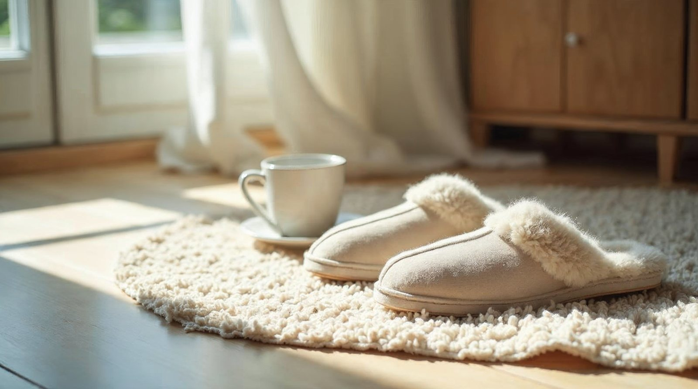
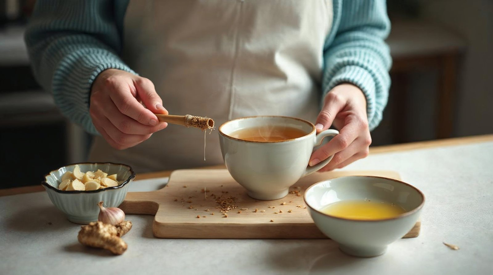
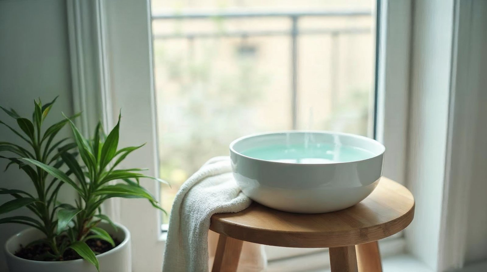
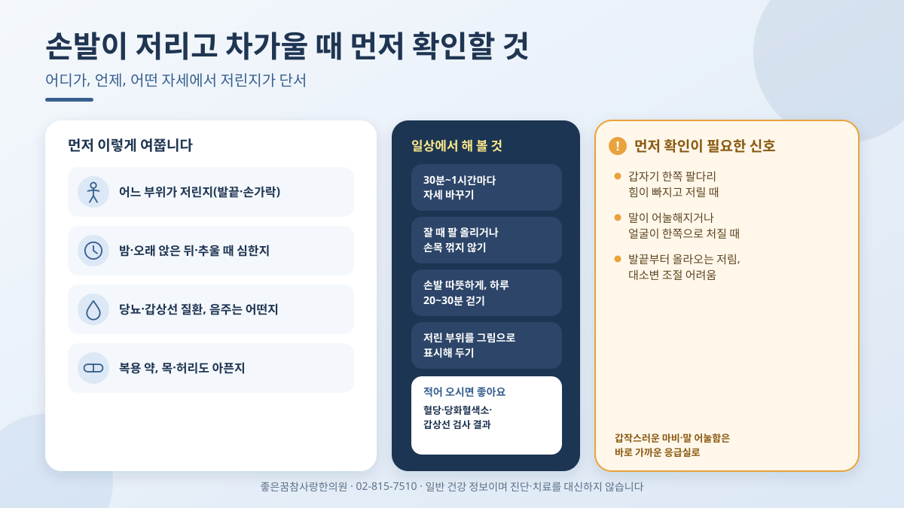

이종호 한의사 감수좋은꿈참사랑한의원 대표원장 (한의사 면허번호 19769)발행 2026-11-26 · 수정 2026-11-26
이 글의 차례
새벽 네 시쯤 손끝이 찌릿해서 잠이 깹니다. 손을 털고 주먹을 쥐었다 펴면 조금 풀리는데, 다시 누우면 또 그렇습니다. 왜 이럴까요? 손발 저림은 혈액순환 하나로만 설명되지 않아서, 저는 어디가 언제 저린지부터 여쭙고 목·허리·손목과 몸 전체의 상태를 함께 살핍니다.
저림이 오는 길은 크게 셋으로 나눠 볼 수 있습니다. 목이나 허리에서 내려오는 길, 손목처럼 좁은 곳에서 눌리는 길, 당뇨·갑상선·비타민 부족처럼 몸 전체의 상태에서 오는 길입니다. 마지막 경우는 내과 검사와 함께 확인합니다.
진료실에서 이런 말씀을 자주 듣습니다. 저린 손을 주무르며 밤마다 증상을 찾아보다가, 혹시 큰 병의 시작은 아닐까 싶어 잠이 더 안 왔다고요. 병원에 가자니 별것 아니라는 말을 들을까 봐 몇 달을 미루셨다는 분도 많습니다.
그런 이야기를 들으면 저림 그 자체보다, 그 걱정을 혼자 안고 지낸 시간이 더 힘드셨겠구나 싶습니다. 그래서 저는 걱정부터 나눠 드리려고 합니다. 바로 확인이 필요한 저림인지 먼저 가리고, 그렇지 않다면 이 저림이 어떤 하루에서 생기는지 차근차근 들여다봅니다.
왜 손발이 저릴까요
저림은 감각을 전하는 신경이 지나는 길 어딘가에서 눌리거나, 몸 전체의 상태 때문에 신경이 약해지거나, 손발로 가는 피의 흐름이 줄어들 때 생기는 경우가 많습니다. 같은 '저리다'는 말 안에 이렇게 여러 갈래가 섞여 있는 셈이지요.
팔베개를 하고 잤거나 다리를 꼬고 오래 앉은 뒤 잠깐 저렸다가, 자세를 바꾸고 몇 분 안에 풀린다면 대개 잠시 눌렸던 경우입니다. 그런데 이런 일이 자꾸 되풀이되거나 풀리는 데 점점 오래 걸린다면 어떨까요? 그때부터는 적어 두셨다가 진료 때 말씀해 주세요.
목과 허리에서 내려오는 저림
목에서 나온 신경은 어깨와 팔을 지나 손가락까지 이어집니다. 고개를 뒤로 젖히거나 저린 쪽으로 기울일 때 팔을 타고 손끝까지 저림이 뻗친다면 목을 먼저 살펴봅니다. 그래서 저는 어느 손가락이 저린지부터 짚어 보시라고 하지요.
목에서 팔로 내려오는 저림은 목에서 팔로 저림이 내려올 때(목디스크 의심)는 어떤 점을 먼저 확인하나요?에 더 자세히 적어 두었습니다.
허리에서 나온 신경은 엉덩이와 다리를 지나 발끝까지 갑니다. 엉덩이에서 허벅지 뒤나 종아리 바깥쪽을 지나 발등, 발바닥으로 저림이 내려가고, 오래 앉아 있거나 기침할 때 더 울린다면 허리 쪽을 먼저 봅니다.
영상에서 디스크가 보인다는 말을 들으면 덜컥 겁이 나지요. 그런데 영상 소견과 실제로 느끼는 불편이 늘 같지는 않습니다. 그래서 저는 사진만 보고 정하지 않고, 어떤 자세에서 저림이 내려가는지, 다리 힘이 빠지지는 않는지를 함께 봅니다.
허리 통증과 다리 저림을 어떻게 나눠 보는지는 허리 디스크 초기 신호와 다리 저림은 어떻게 구분하나요?에서 함께 보실 수 있습니다.
손목과 팔꿈치처럼 좁은 길에서 눌리는 저림
신경이 지나는 길 가운데 유난히 좁은 곳이 있습니다. 손목 안쪽이 대표적입니다. 엄지부터 가운뎃손가락 쪽이 저리고, 밤이나 새벽에 저려서 깼다가 손을 털면 풀리는 일이 되풀이되지는 않나요? 그렇다면 손목에서 눌리는 경우를 생각해 봅니다.
넷째·새끼손가락 쪽이 저리다면 팔꿈치 안쪽을 함께 봅니다. 휴대폰을 귀에 대고 오래 통화하거나 팔꿈치를 책상에 괴고 있으면 이 길이 눌리기 쉽습니다. 다만 목에서 오는 저림과 겹쳐 보일 때가 있어 목도 같이 확인합니다.
몸 전체의 상태에서 오는 저림
양쪽 발끝에서 시작해 양말을 신는 자리처럼 서서히 위로 올라오고, 시간이 지나며 손끝까지 오는 저림이 있습니다. 이런 모양이라면 한 군데가 눌렸다기보다 몸 전체의 상태를 먼저 의심해 봅니다.
당뇨, 갑상선 기능 변화, 비타민 B12 부족, 잦은 음주, 일부 약이 원인이 되는 경우가 있습니다. 위 수술을 받으셨거나 식사가 한쪽으로 치우친 분은 비타민 부족도 살펴야 합니다. 이런 원인은 맥으로 대신 알아낼 수 없어, 혈액 검사 같은 내과 검사와 함께 확인합니다.
차갑고 저릴 때, 순환과 몸의 온기
몸은 추울 때 몸 중심의 온도를 지키려고 손발 쪽으로 가는 피의 흐름을 줄이는 경향이 있습니다. 그래서 찬 바람을 맞은 날에는 손발이 차면서 저린 느낌이 함께 오기도 하지요.
저린 것과 시린 것을 섞어서 말씀하시는 분이 많은데, 둘을 나눠 주시면 살필 곳이 훨씬 분명해집니다. 어떻게 나누면 좋을지는 손발이 저린 것과 시린 것은 어떻게 다르게 설명하면 될까요?에 정리해 두었습니다.
추위에 손가락이 하얗게 또는 파랗게 질렸다가 붉어지며 아프다면, 혈관 반응을 따로 확인하는 편이 좋습니다. 이런 색 변화는 진료 때 꼭 말씀해 주세요.
한의학에서는 몸이 경락이라는 길로 서로 이어져 있다고 봅니다. 그래서 저린 손끝만 보지 않고 그 길이 지나는 목과 어깨, 손발의 온기와 몸 전체의 순환을 함께 살핍니다. 손발이 늘 찬 분은 잠과 소화가 함께 흔들리는 경우도 많아 같이 여쭙습니다.

예를 들면 이런 경우입니다
예를 들어 하루 종일 마우스와 키보드를 쓰고, 밤이면 엄지부터 가운뎃손가락까지 저려 손을 털며 깨는 경우라면 손목 쓰는 시간과 잠든 자세를 함께 봅니다. 손목을 안으로 꺾은 채 자는 습관이 있는지, 목과 어깨가 굳어 있는지도 확인합니다.
예를 들어 당뇨약을 여러 해 드신 분이 양쪽 발끝이 화끈거리고 양말을 신은 것처럼 둔하다고 하시는 경우라면, 최근 당화혈색소 결과와 발에 상처가 없는지부터 봅니다. 혈당 관리는 다니시는 내과와 이어 가시도록 말씀드리고, 발 마사지도 세게 하지 않도록 안내합니다.
예를 들어 장거리 운전을 한 날이면 엉덩이에서 종아리 바깥쪽으로 저림이 내려가고, 기침할 때 허리가 울리는 경우라면 허리의 움직임과 다리 힘을 먼저 확인합니다. 발목이나 엄지발가락을 들어 올리는 힘이 약해졌다면 영상 검사가 가능한 의료기관을 먼저 안내합니다.
스스로 점검해 보세요
- 저린 곳이 양쪽인지 한쪽인지, 어느 손가락·발가락인지 짚을 수 있다
- 밤이나 새벽에 저려서 깨고, 손을 털면 조금 풀린다
- 고개를 젖히거나 오래 앉아 있으면 저림이 팔이나 다리로 뻗친다
- 단추 채우기, 젓가락질, 동전 집기가 예전보다 서툴다
- 양쪽 발끝의 둔한 느낌이 서서히 위로 올라오는 것 같다
- 당뇨나 갑상선 질환이 있거나, 술을 자주 드시거나, 오래 드신 약이 있다
- 추운 곳에서 손가락 색이 하얗게 또는 파랗게 변한다
두세 가지 넘게 해당한다면 표시해 두셨다가 진료 때 그대로 보여 주셔도 됩니다. 이 목록은 원인을 정하는 시험이 아닙니다. 제가 여쭐 질문을 미리 떠올려 보시는 정도로 쓰시면 됩니다.
먼저 이렇게 여쭙니다
- 어디가 저린가요? 양쪽인가요, 한쪽인가요?
- 찌릿한가요, 감각이 둔한가요, 차갑게 시린가요?
- 언제 심한가요? 새벽, 오래 앉은 뒤, 추운 곳, 특정 자세처럼 떠오르는 때가 있나요?
- 목이나 허리 통증, 힘이 빠지는 느낌이 함께 있나요?
- 당뇨·갑상선 질환이 있나요? 드시는 약과 술은 어느 정도인가요?
처음부터 정확하게 설명하지 못하셔도 괜찮습니다. 손가락으로 저린 자리를 짚어 주시면 그것만으로도 많은 이야기가 됩니다. 나머지는 제가 하나씩 여쭙겠습니다.
잠은 어떠신지도 꼭 여쭙습니다. 저림 때문에 깨는 밤이 이어지면 잠이 얕아지고, 잠이 부족한 날에는 같은 불편도 더 크게 느끼시는 경우가 많기 때문입니다.

일상에서 먼저 해 볼 수 있는 것
- 30분~1시간마다 자세를 바꾸고 손목과 발목을 천천히 돌리기
- 잘 때 팔을 머리 위로 올리거나 팔베개를 하지 않고, 손목을 꺾은 채 자지 않기
- 통화는 이어폰으로 하고, 팔꿈치를 오래 굽히거나 책상에 괴지 않기
- 앉아서 골프공을 발바닥 아래 두고 1~2분 굴리고, 오일을 조금 발라 종아리를 아래에서 위로 쓸어 올리기
- 장갑과 두꺼운 양말로 손발을 따뜻하게 하고, 하루 20~30분 가볍게 걷기
공으로 문지르거나 따뜻하게 했을 때 시원하면 이어 가시고, 쥐가 나거나 저림이 늘면 그날은 멈추시면 됩니다. 아프지 않고 시원한 정도면 충분합니다. 많이 한다고 좋은 것은 아니니 몸의 반응을 보세요.
당뇨가 있거나 발 감각이 둔한 분은 조금 다르게 하셔야 합니다. 다쳐도 모를 수 있어 공으로 문지를 때도 세게 하지 않고, 저녁마다 발바닥과 발가락 사이를 한 번씩 살펴보세요. 발을 담글 물은 팔꿈치나 온도계로 먼저 재 보시고, 핫팩은 한 곳에 오래 두지 마세요.
눈 오는 날 출근길처럼 추운 아침에는 집을 나서기 전에 손을 몇 번 쥐었다 펴고 장갑부터 챙기세요. 몸이 움츠러든 채로 언덕과 계단을 서둘러 오르면 손발이 더 차고 뻣뻣해지기 쉬우니까요.
이렇게 2주쯤 지내 보면서 저림이 생기는 때와 자리를 적어 보세요. 2~4주가 지나도 이어지거나 저린 범위가 넓어진다면 진료와 필요한 검사를 받아 보시길 권합니다.
물건을 자주 떨어뜨리거나 단추 채우기가 어려워질 만큼 손이 둔해졌다면 기다리지 말고 신경 검사가 가능한 의료기관부터 확인하세요. 발에 난 상처가 잘 아물지 않는 경우도 미루지 않는 편이 좋습니다.

한의원에서 함께 살필 수 있는 경우
- 병원 검사에서 큰 이상이 없다고 들었지만 저림과 둔한 느낌이 이어지는 경우
- 오래 앉거나 같은 자세로 일한 뒤 목·어깨·허리의 긴장과 함께 저림이 오는 경우
- 손발이 늘 차고 잠이나 소화도 함께 흔들리는 경우
- 다른 병원 치료를 이어 가면서 자세와 생활 관리를 함께 살피고 싶은 경우
좋은꿈참사랑한의원에서는 처음 오신 분이든 다시 오신 분이든 양손의 맥부터 짚습니다. 맥을 짚으며 저린 자리와 시작된 때, 심해지는 자세를 듣고, 받아 두신 혈액 검사나 신경 검사, 영상 검사 결과가 있으면 함께 봅니다.
이어서 목과 허리를 앞뒤, 좌우로 움직여 보며 어느 방향에서 저림이 뻗치는지 확인합니다. 손으로 버티는 힘과 다리를 드는 힘, 감각을 좌우로 비교하고, 필요하다고 판단될 때는 팔과 종아리 근육을 눌러 굳은 정도도 봅니다.
힘은 그날의 몸 상태에 따라서도 달라집니다. 물을 거의 드시지 않고 오신 날에는 힘이 약하게 나오거나 좌우 차이가 크게 보이기도 해서, 물을 한 잔 드시고 잠시 쉬신 뒤 같은 방법으로 다시 봅니다. 오시기 전 물 한두 잔과 가벼운 식사를 권하는 이유입니다.
교정이 필요하다고 판단되면 머리와 목, 등, 골반처럼 위에서 아래로 차례를 둡니다. 한 단계를 마칠 때마다 같은 자리로 돌아가 힘을 다시 보면 어디에서 반응이 달라졌는지 가리기 쉽고, 환자분도 그 과정을 함께 확인하실 수 있습니다.
필요하면 초음파로 손목 주변의 힘줄과 조직을 함께 보기도 합니다. 다만 초음파로 신경계 질환까지 평가하기는 어려워서, 신경 검사나 영상 검사가 먼저 필요해 보이면 그 이유와 함께 안내합니다.
혈당이 걱정되면 원내 당화혈색소 검사기로 확인해 보기도 합니다. 수치에 따른 진단과 약 조절은 내과에서 이어 가시도록 말씀드립니다.
이렇게 살핀 내용을 놓고 침, 약침, 추나, 한약 가운데 지금 상태에 맞는 방법을 함께 정합니다. 침은 저린 자리 가까이에 놓기도 하고, 경락의 원리에 따라 떨어진 손발에 놓기도 합니다. 침의 개수보다 지금 이 몸에 필요한 자리를 고르는 일이 먼저라고 생각합니다.
귀가 전에는 집에서 바꿔 볼 자세 한두 가지를 정해 드립니다. 다시 오시면 지난번 짚어 주신 저린 자리가 어떻게 달라졌는지부터 여쭙고, 같은 동작으로 힘과 감각을 다시 비교합니다.
이렇게 기록해 오시면 상담이 쉬워집니다
종이에 손과 발 모양을 대충 그리고, 저린 자리를 색칠해 오시면 됩니다. 며칠 간격으로 같은 그림에 다른 색을 칠하면 범위가 넓어지는지, 줄어드는지 한눈에 보입니다. 그림 한 장이 긴 설명보다 많은 것을 알려 줄 때가 있습니다.
그 옆에 저림이 심했던 시간과 그때의 자세, 하던 일을 한 줄씩 적어 주세요. 최근 혈당이나 당화혈색소, 갑상선 검사 결과지가 있다면 함께 가져오시고, 드시는 약과 영양제, 술 마시는 횟수도 알려 주시면 상담이 훨씬 수월해집니다.
저린 손을 주무르며 혼자 걱정하는 밤이 길어지지 않으셨으면 합니다. 다음에 오시면 어느 손가락이, 몇 시쯤 저렸는지부터 여쭙겠습니다.
이런 증상은 먼저 확인이 필요합니다
- 갑자기 한쪽 팔다리가 저리거나 힘이 빠지는 경우, 말이 어눌해지거나 얼굴 한쪽이 처지는 경우
- 다리가 저리면서 대소변을 보기 어렵거나 엉덩이·사타구니 감각이 둔해지는 경우
이런 신호가 있으면 한의원보다 가까운 병원이나 응급실을 먼저 찾으세요.

여쭙는 것
- 어디가 저린가요? 양쪽인가요, 한쪽인가요?
- 찌릿한가요, 감각이 둔한가요, 차갑게 시린가요?
- 언제 심한가요? 새벽, 오래 앉은 뒤, 추운 곳, 특정 자세처럼 떠오르는 때가 있나요?
생활에서 해 볼 것
- 30분~1시간마다 자세를 바꾸고 손목과 발목을 천천히 돌리기
- 잘 때 팔을 머리 위로 올리거나 팔베개를 하지 않고, 손목을 꺾은 채 자지 않기
- 통화는 이어폰으로 하고, 팔꿈치를 오래 굽히거나 책상에 괴지 않기
한의원에서 함께 살필 것
- 병원 검사에서 큰 이상이 없다고 들었지만 저림과 둔한 느낌이 이어지는 경우
- 오래 앉거나 같은 자세로 일한 뒤 목·어깨·허리의 긴장과 함께 저림이 오는 경우
- 손발이 늘 차고 잠이나 소화도 함께 흔들리는 경우
먼저 확인이 필요한 신호
- 갑자기 한쪽 팔다리가 저리거나 힘이 빠지는 경우, 말이 어눌해지거나 얼굴 한쪽이 처…
- 다리가 저리면서 대소변을 보기 어렵거나 엉덩이·사타구니 감각이 둔해지는 경우
한눈에 보는 표
| 구분 | 핵심 |
|---|---|
| 여쭙는 것 | 어디가 저린가요? 양쪽인가요, 한쪽인가요? 찌릿한가요, 감각이 둔한가요, 차갑게 시린가요? |
| 생활에서 해 볼 것 | 30분~1시간마다 자세를 바꾸고 손목과 발목을 천천히 돌리기 잘 때 팔을 머리 위로 올리거나 팔베개를 하지 않고, 손목을 꺾은 채 자지 않기 |
| 한의원에서 함께 살필 것 | 병원 검사에서 큰 이상이 없다고 들었지만 저림과 둔한 느낌이 이어지는 경우 오래 앉거나 같은 자세로 일한 뒤 목·어깨·허리의 긴장과 함께 저림이 오는 경우 |
| 먼저 확인이 필요한 신호 | 갑자기 한쪽 팔다리가 저리거나 힘이 빠지는 경우, 말이 어눌해지거나 얼굴 한쪽이 처지는 경우 다리가 저리면서 대소변을 보기 어렵거나 엉덩이·사타구니 감각이 둔해지는 경우 |
자주 묻는 질문
손발 저림은 혈액순환이 안 돼서 생기는 건가요?
그런 경우도 있지만 목·허리·손목에서 신경이 눌리거나, 당뇨·갑상선 같은 몸 전체의 상태 때문에 생기기도 합니다. 저린 자리와 시간을 함께 보며 원인을 좁혀 갑니다.
당뇨가 있는데 한의원 진료를 받아도 되나요?
받으실 수 있습니다. 혈당 관리와 약 조절은 다니시는 내과에서 이어 가시고, 최근 검사 결과와 드시는 약을 알려 주시면 함께 참고합니다. 발 감각이 둔하면 마사지와 찜질은 약하게 하세요.
손이 저린데 손목이 아니라 목 때문일 수도 있나요?
그럴 수 있습니다. 저린 손가락의 위치, 밤에 심한지, 고개를 움직일 때 달라지는지를 함께 확인해 목과 손목 가운데 어디를 먼저 볼지 정합니다.
저림이 있어도 침이나 추나를 받을 수 있나요?
맥을 짚고 저린 자리와 목·허리의 움직임을 살핀 뒤 정합니다. 치료 중 찌릿하거나 저린 느낌이 들면 참지 말고 바로 말씀해 주세요. 그 말씀에 맞춰 자극과 방향을 조절합니다.
좋은꿈참사랑한의원은 재진 때 지난번 이야기부터 이어서 여쭙니다. 진료시간과 예약은 오시는 길에서 확인하세요.
어디서 상담받을 수 있나요?
좋은꿈참사랑한의원은 서울 동작구 만양로2길 2 신성빌딩 3층·5층(서울 동작구 상도동, 7호선 상도역 3번 출구 근처)에 있습니다. 한의사 3명(이종호 대표원장, 조영기 수석진료원장, 정원영 진료원장)이 진료합니다. 진료시간은 평일 09:30~20:00(점심 13:00~14:00), 토·일·공휴일 09:30~15:00이며, 방문 전 전화로 확인을 권합니다. 예약은 네이버 예약, 카카오톡 상담, 전화 02-815-7510로 받습니다.
이 글은 일반적인 건강 정보이며 개인의 진단이나 치료를 대신하지 않습니다. 증상이 있거나 복용 중인 약이 있다면 진료를 통해 확인하세요. 치료 효과는 개인마다 다를 수 있습니다.
작성 기준: 일반적으로 알려져 있는 건강 정보를 참고해 정리했습니다(대표원장 감수). 증상 기록은 1~2주 동안 하루 1회, 비슷한 시간에 적어 오시면 지난 상태와 비교하기 쉽습니다.